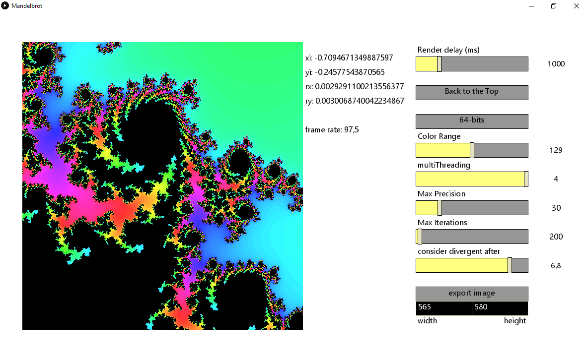

Outros
Algumas aproximações de esfera com o icosaedro
Baseado em um problema de geometria que eu tive em um vestibular uma vez. A curva do gráfico representa a área da zona em rosa na figura.

Um navegador do fractal de Mandelbrot com multithreading e modo de precisão arbitrária. 